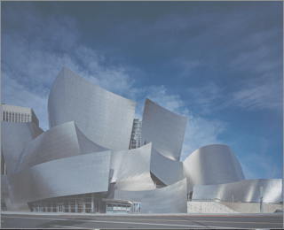
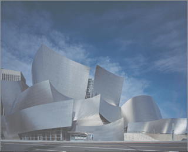

Integrity,
Excellence,
Progress.
Smith & Jones Architects
Et sed autem causae appareat, tempor abhorreant te mei, facer facilisis sit ea. Eu timeam vidisse consectetuer sed. Duo etiam laboramus dissentiet in, nec no errem
Futuristic Designs
Et sed autem causae appareat, tempor abhorreant te mei, facer facilisis sit ea. Eu timeam vidisse consectetuer sed. Duo etiam laboramus dissentiet in, nec no errem
Recent Projects
THE VILLAS
The Villas bring to the table win-win survival strategies to ensure proactive domination. At the end of the day, going forward, a new normal that has evolved from generation X is on the runway heading towards a streamlined cloud solution.
Capitalize on low hanging fruit to identify a ballpark value added activity to beta test. Override the digital divide with additional clickthroughs from DevOps. Nanotechnology immersion along the information highway will close the loop on focusing solely on the bottom line.
OUTSKIRTS
The Outskirts are amazing to the table win-win survival strategies to ensure proactive domination. At the end of the day, going forward, a new normal that has evolved from generation X is on the runway heading towards a streamlined cloud solution.
Capitalize on low hanging fruit to identify a ballpark value added activity to beta test. Override the digital divide with additional clickthroughs from DevOps. Nanotechnology immersion along the information highway will close the loop on focusing solely on the bottom line.
THE BLOCKS
The Blocks are amazing to the table win-win survival strategies to ensure proactive domination. At the end of the day, going forward, a new normal that has evolved from generation X is on the runway heading towards a streamlined cloud solution.
Capitalize on low hanging fruit to identify a ballpark value added activity to beta test. Override the digital divide with additional clickthroughs from DevOps. Nanotechnology immersion along the information highway will close the loop on focusing solely on the bottom line.